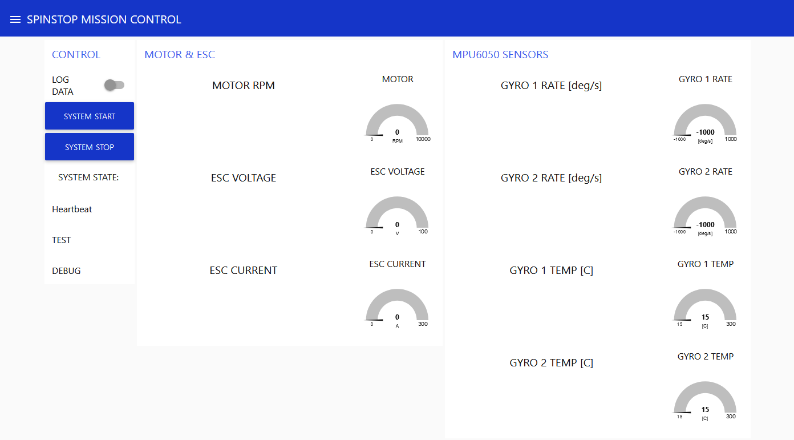
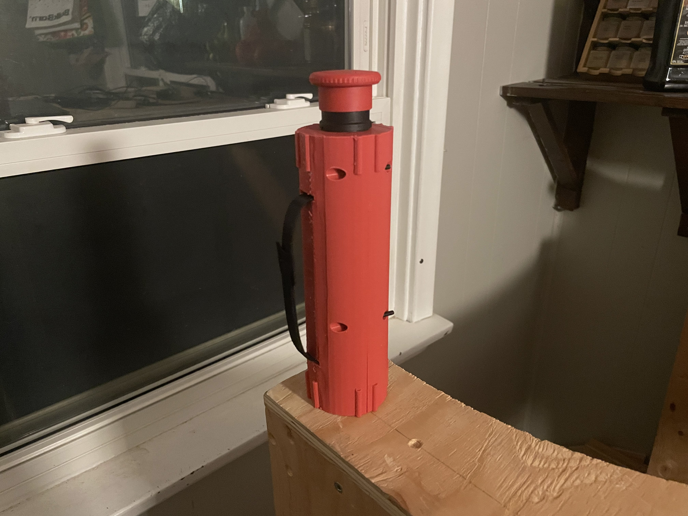

Data Dashboard and Remote ESTOP!
March 10, 2024
Hey Sailors,
We have finished our dashboard and completed the assembly of the remote ESTOP!
The dashboard is hosted on a raspberry pi and uses MQTT to show us all kinds of data from the sensors, ESC, motor and more. It also has the ability to log all the data to a database.

The remote ESTOP also uses MQTT and has a heartbeat signal to ensure that it is always connected to the device, and if it is not, it will automatically cut power to the motor.

Bye Sailors,